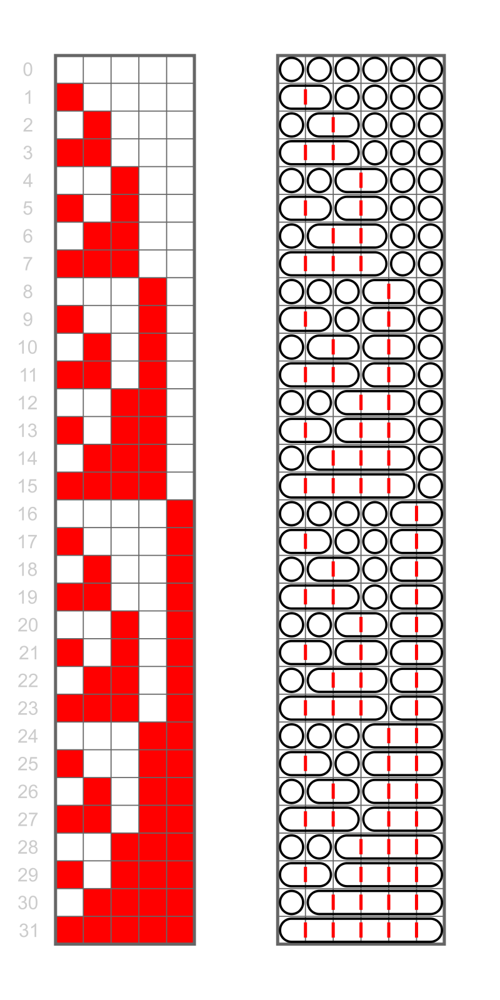

Multinomial Theorem
One of the problems you might face in combinatorics is to calculate the number of permutations for a set that can contain repeating symbols. It is a really common problem that can emerge a lot of the time in the future. The objects in these problems are all of the symbols in the set, while the classes are the number of unique elements. Both the objects and the classes are distinguishable, however the objects are also strictly ordered.
Multinomial problem
Calculate the number of permutations of the letters of the word MISSISSIPPI.
Objects: 11, distinguishable
Classes: 5, distinguishable
Explanation
STEP 1: Calculate the number of permutations as if each letter was unique.
$$P(n) =n!$$
STEP 2: Count the number of times each letter appears in the word.
$$M = 1$$
$$I = 4$$
$$S = 4$$
$$P = 2$$
STEP 3: Because swapping the identical letters
(for instance, two P's) does not change the end result,
we should divide our answer from STEP 1 by the number of permutations of each type of letter.
$$N = {N_{total}\choose{N_{M} N_{I} N_{S} N_{P}}} = {11\choose{1\text{ }4\text{
}4\text{ }2}} = 34650$$
Type
any English word in here
and get the number of letter permutations for it:
To see the theorem behind our calculations here, check out the multinomial theorem.
Integer compositions, "Stars and bars"
One of the most challenging and popular problems in classical combinatorics is distributing indistinguishable items into distinguishable classes. A wide range of some seemingly totally different combinatorial problems can be led down to this approach. The most widely known example is finding the number of compositions for an integer of a certain length. The formulation is following (from Wikipedia):
Integer composition problem
A composition of an integer \(n\) is a way of writing \(n\) as the sum of a sequence of (strictly)
positive integers. Two sequences that differ only
in the order of their terms define different compositions of their sum, while they are
considered to define the same partition (more about that in the next chapter, Integer Partitions)
of that number.
A weak composition of an integer \(n\) is similar to a composition of \(n\), but it allows the terms of
the sequence to be zero.
This is literally equivalent to solving the equation:
$$x_1 + x_2 + x_3 + ... + x_k = n$$
Where \(x_i, n, k \in Z, n, k \ge 1\)
\(x_i > 0\) refers to classical composition, while \(x_i \ge 0\) refers to weak
composition.
Explanation
Let us imagine that the indistinguishable objects are \(n\) integers of value 1. We have to distribute them
among \(k\) distinguishable classes (terms of integer composition).
Classic compositions correspond to the case where each class has to contain at least one object (or
each term has to be at least one).
Weak compositions correspond to the case where classes can be empty (terms can be zeros).
Another classical problem looks a bit lightweight and corresponds to a classical formulation:
Distributing indistinguishable objects among distinguishable
classes
How to distribute \(n\) similar books to \(k\) students in the class (students are different and
unique)?
The answer depends on whether we can leave classes empty (as in the case of
integer distribution)
Even though problems about integer composition and book distribution seem to be totally different, they are functionally identical. The solution of the classical formulation of the problem (about objects and classes) for n objects and k classes is the following:
Solution
If we are not allowed to leave empty classes, we have \(C_{n-1}^{k-1}\) possible variants. \((*)\)
If we are, there are \(C_{n+k-1}^{k-1}\) possible distributions. \((**)\)
Explanation ("Stars and bars")
Let us put all \(n\) indistinguishable objects ("stars") in a row, now imagine we have \(k-1\)
separating "bars" that we need to put
somwhere beetwen the stars to distribute them among \(k\) classes; ranges of stars between adjacent
separators refer to corresponding classes
(as in, the first class refers to first range from left, etc). To count the number of
distributions we need to find the number of
allocations of these \(k - 1\) separators. Since no two separators can occupy the same spot, we have to
choose \(k - 1\) items from \(n - 1\) positions, which is the \((*)\) answer .
If we can leave empty classes, we just need to place \(n + k - 1\) stars in a row and then
choose \(k - 1\) of those stars to act as separators. This is equivalent to
selecting \(k - 1\) item from \(n + k - 1\) avilable, which is the earlier mentioned formula \((**)\).
Integer Partitions
This is by far the least trivial class of problems. At first glance, the fact that the classes are indistinguishable changes little to nothing: you only need to divide the result from the case where they are distinguishable by the number of classes.
Consider the problem with distributing balls between urns, represented by the integer composition equation $$x_1 + x_2 + x_3 + ... + x_k = n$$ In it, we imagine that the urns are distinguishable, and thus get additional solutions that only differ by which balls are in which urns. By making the urns indistinguishable, we can extract those redundant solutions and only keep the ones that are truly distinct. However, this doesn’t change the inherent structure of the problem. All we need to do is to divide the original result by \(k!\).
Let us try to dive a little bit deeper into the
subject.
What if we don’t limit ourselves to a set number of classes? In this case, the result would
be
all possible ways to distribute \(M\) balls between any number of urns, not just necessarily
\(k\). This
class can be thought of as attempting to divide a positive integer into parts, without
taking
the order of the parts into account, like this:
$$7=3 + 2 + 1 + 1$$
In number theory, such a process is called partitioning, while the resulting division
of
the
number is called a partition, or an integer partition. The summands of a
partition
are often
called parts.
An example of all possible partitions of a number would be:
$$4 = 2 + 2 = 3 + 1 = 2 + 1 + 1 = 1 + 1 + 1 + 1$$
Counting the whole number as a partition too (put all 4 balls in one group), the number 4
can be
partitioned in 5 different ways. Notice that we don’t count \(1 + 3\), for instance, because
it
only
differs from \(3 + 1\) in its order. Because of this, it is a common convention to write the
parts
in decreasing order.
Unfortunately, you will not find a simple way to count the number of partitions for any
positive
integer \(n\) here. This function, often denoted as \(p(n)\), does not have a known closed-form
expression. However, there is still a lot to learn
about it.
Partitions of a number are usually expressed through either a Ferrers diagram or a Young diagram. While I won’t use any of them here, you can look them up to gain a visual intuition on partitions. In particular, they will help you understand a few interesting facts about partitions, such as conjugate partitions and partitions with distinct parts.
Conjugate partitions are created by “flipping” a diagram of a partition along its main diagonal. Algebraically speaking, for a given partition (example: \(7 = 4 + 2 + 1\)) a conjugate is created by counting the number of parts in a partition, subtracting 1 from each part, and then repeating the process until nothing remains (for the above example, the conjugate would be \(7 = 3 + 2 + 1 + 1\)). Self-conjugate partitions are ones that transform into themselves using this process, like \(6 = 3 + 2 + 1\).
Partitions with distinct parts are ones in which no number occurs more than once. These are usually denoted as \(q(n)\), and have their own generating function as well as a recurrence relation given by the pentagonal number theorem. I will not be going to talk about them here though, as they do not relate to the combinatorics in question at all.
\(p_{k}(n)\) is the number of partitions of a number \(n\) that contain precisely \(k\) parts.
This relates back to the question with urns and balls: \(k\) is the number of urns. By definition,
$$\sum\limits_{k = 1}^n{p_{k}(n) = p(n)}$$
Since conjugate partitions are constructed using the amount of parts
in the original partition, the largest part in a conjugate is always
the size of the original. Using this fact, \(p_{k}(n)\) can be expressed
as the number of partitions where the largest part is exactly \(k\).
By subtracting \(k\) from each of those partitions, we get all ways to partition \(n-k\), or \(p(n-k)\).
Now that we’re familiar with the concepts at hand, we can tackle directly calculating \(p(n)\).
A generating function for \(p(n)\) is a reciprocal of the Euler’s function and looks like this:
$$\sum\limits_{n=0}^\infty{p(n)x^n}=\prod\limits_{k = 1}^\infty{\frac{1}{1-x^k}}$$
Expanding the denominator of the product gets us the
pentagonal number theorem.
The asymptotic growth rate of the partition function is given by
\(log(p(n)) \approx C\sqrt{n}\) as \(n -> \infty\), where \(C =
\pi\sqrt{\frac{2}{3}}\).
Finally, we can try to limit both the number of parts as well as the largest part in a partition. Let \(p(N, M, n)\) denote the number of partitions of \(n\) with at most \(M\) parts, each of size at most \(N\). Equivalently, these are the partitions whose Young diagram fits inside an \(M×N\) rectangle. There is a recurrence relation $$p(N, M, n) = p(N, M-1, n) + p(N-1, M, n-M)$$ obtained by observing that \(p(N, M, n) - p(N, M-1, n)\) counts the partitions of \(n\) into exactly \(M\) parts of size at most \(N\), and subtracting 1 from each part of such a partition yields a partition of \(n − M\) into at most \(M\) parts.
We can see that integer partitions are a broader and a more difficult class of problems than the
simple combinatorial ones, and that there is a lot to study about them. However, diving
deeper into advanced mathematics is always a useful exercise that is worth doing.